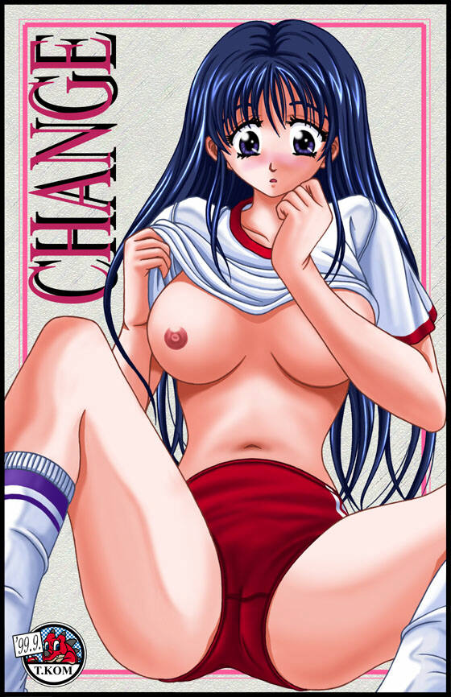

| 【管理人よりお知らせ】 （以下の文章は1999年九月当時に書かれたものです） 当作品は、10月いっぱいまでの仮公開となっています。10月末の時点で、継続公開するかどうか決める予定です。当サイトの規定にいう「未成年に有害な性的な描写」にあたるかどうか、皆さんの御意見もお聞かせ下さい。yays@geocities.co.jp 性描写は、少年マンガで一般に許されているレヴェルまで、という少年少女ギャラリー運営上の内規があります。今回のイラストはその内規に照らして、「非常に判断の難しいボーダーレベルの作品」だと私は感じました。作者である午後の緑茶さんとメールでやりとりをしましたところ、午後の緑茶さんが筋の通ったポリシーと必然性に基づいて今回のように露出の高いシーンを描かれたのだと知りました。そこで、まずは仮公開という形で作品を御覧になった方の御意見なども参考にしつつ私自身、しばらく「倫理規定」運用のありかたについて検討をしてみようと思っています。 もちろん今回の露出度が「ボーダーライン」なのは間違いないので、今回同様の露出度のCGをお寄せいただいた場合、掲載できないことも考えられます。当面は管理人が掲載にあたって「内規に照らし云々」と悩まずに済む作品にしていただけると助かります。(^^; なお、内規云々といった話を別にすれば、この作品が素晴らしくハイクオリティな名品であることは私が今さら言うまでもないことと思います。 |
| DEDICATED STORIES | CONTRIBUTER | RECOMMEND |
| 男女入れ換え戦 | もぐりんさん (Homepage) | 男女入れ替え戦という発想がすばらしいです。ショートストーリーらしい短さの中に想像力を刺激する粒々がいっぱい詰まってますね。おや、登場人物の中にどこかで見たような見ないような名前も…… |

|
|